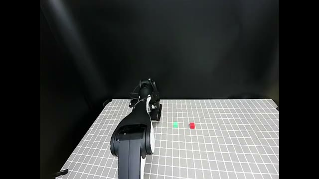
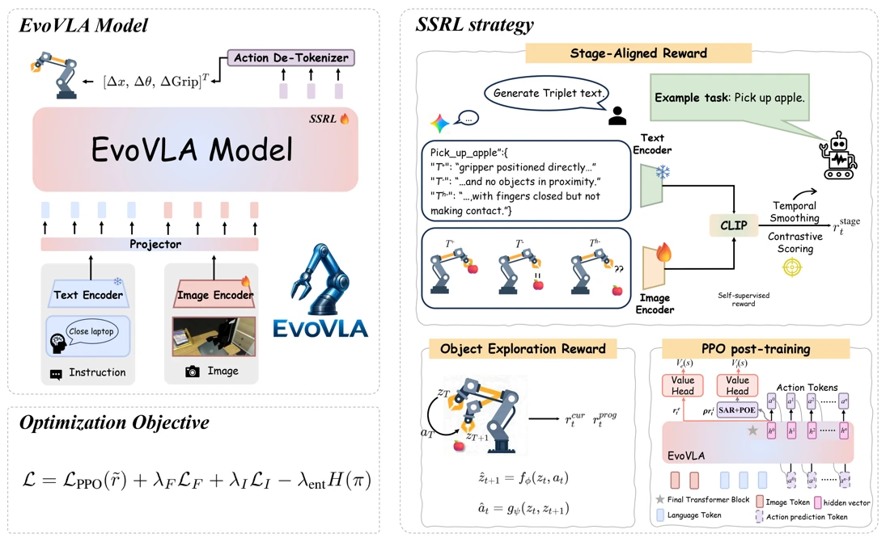

EMNLP 2026 · Main Conference口头报告（Oral）
EMER-Guard
共同第一作者、通讯作者构建含 6.9 万个反事实样本的评测基准，依据应急规程核查大模型指令，分别衡量漏检危险建议和误拦安全建议的代价。
阅读研究 ↗可信人工智能 · 具身智能
Zida Yang
北京大学光华管理学院博士研究生
企业管理专业 · 管理科学与信息系统方向
我对 AI 的好奇，常常始于一个看起来正确的答案。删掉依据后，模型还会坚持原判吗？网页被复制多次，就多了几份证据吗？我把这些问题做成可验证的实验，也研究机器人如何判断任务进展。
这场研讨会在哪个厅举行？
周一发布的日程在周二修订。改变决策日期，观察当时能使用哪一版。
构建含 6.9 万个反事实样本的评测基准，依据应急规程核查大模型指令，分别衡量漏检危险建议和误拦安全建议的代价。
阅读研究 ↗对同一问题分别删除证据、制造冲突、调换顺序或引入干扰，检验检索增强生成系统是否在该改变答案时改变、该坚持时坚持。
阅读研究 ↗
▶ 观看实验
在长时程任务中，我们按阶段给出奖励，依据物体姿态探索，并在后续动作需要上下文时调取先前的观察。
我于 2024 年进入北京大学光华管理学院攻读博士学位。管理科学训练影响着我研究人工智能的方式：作出决策时有哪些证据可用，哪些约束真正起作用，又有哪些变化足以改变判断？
我也关注人工智能系统背后的劳动者。两篇获 INDL-9 口头报告录用的会议摘要讨论劳动者如何核验数据来源，以及如何参与人工智能供应链治理。